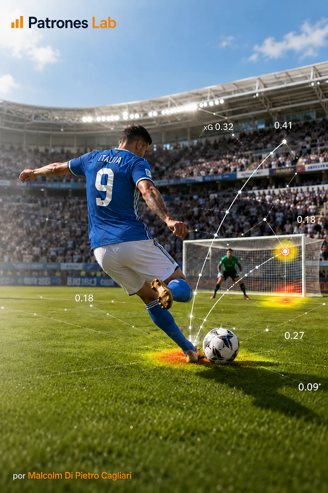
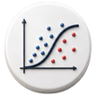

ANALISI SPORTIVA · PROGETTO 07

Progetto 06 · Analisi calcistica
Modello Machine Learning · Gol attesi (xG)
Modello di regressione logistica che stima la probabilità che ogni tiro diventi gol con dati pubblici StatsBomb, validazione per partita e applicazione a selezioni del Mondiale Qatar 2022.

CONTESTO E OBIETTIVO
Costruire un modello xG interpretabile che assegni a ogni tiro una probabilità di gol, evitando fughe informative tra le partite e riservando un insieme esterno di applicazione.
DATI E DIAGNOSI
- Vengono raccolti 63.740 tiri provenienti da 2.526 partite, escludendo le serie di rigori.
- Si derivano distanza e angolo rispetto alla porta e si codificano parte del corpo, tipo e tecnica di tiro, pressione e posizione del giocatore.
- Training e test vengono separati per partita con GroupShuffleSplit; il modello finale utilizza 12 variabili ed è applicato esternamente ad Argentina, Francia, Marocco e Croazia nel Qatar 2022.
CONSEGNA E APPRENDIMENTO
Nel test, il modello raggiunge ROC AUC 0,795 e Brier score 0,079; stima 1.674 gol attesi rispetto a 1.688 gol osservati. Nell’applicazione esterna stima 58,2 xG rispetto a 57 gol reali.